[TOC]
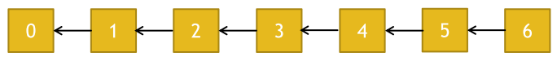
拜占庭将军问题 - 共识机制之一 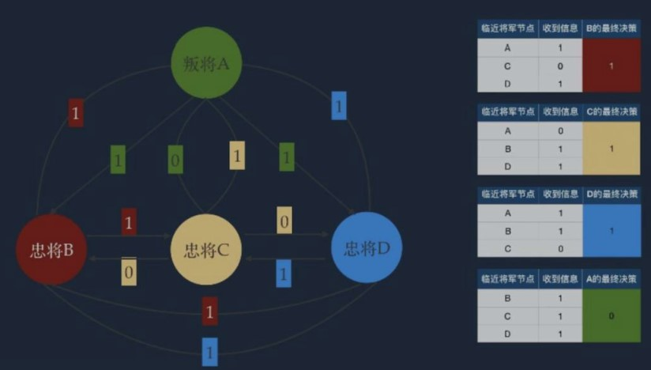
POW(Proof of Work)-工作量证明
矿工在挖矿前要组建区块
挖矿成功后，将计算出来的随机数 nonce(POW) 填入区块头部， 并向临近节点传播
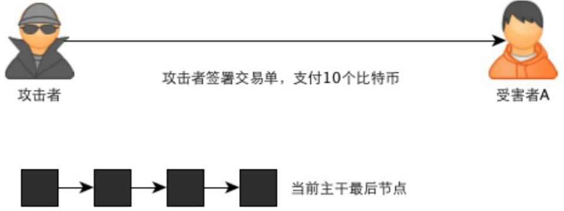
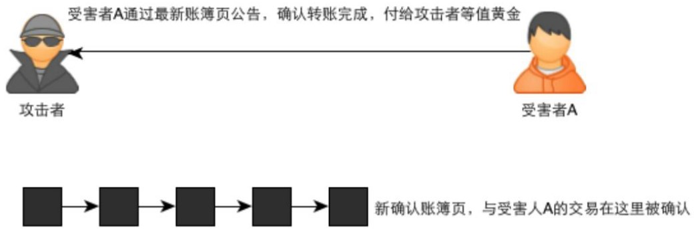
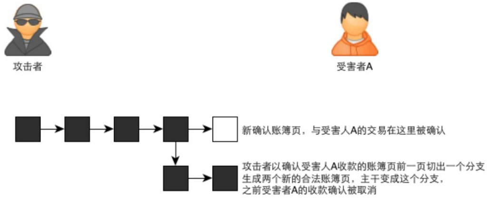
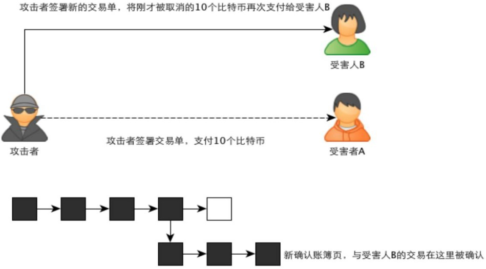
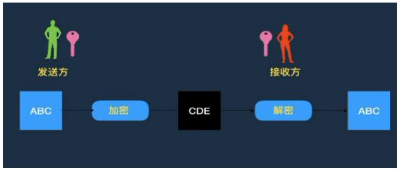
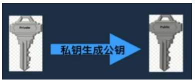
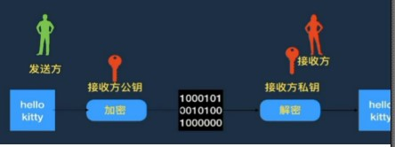
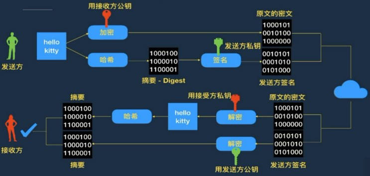
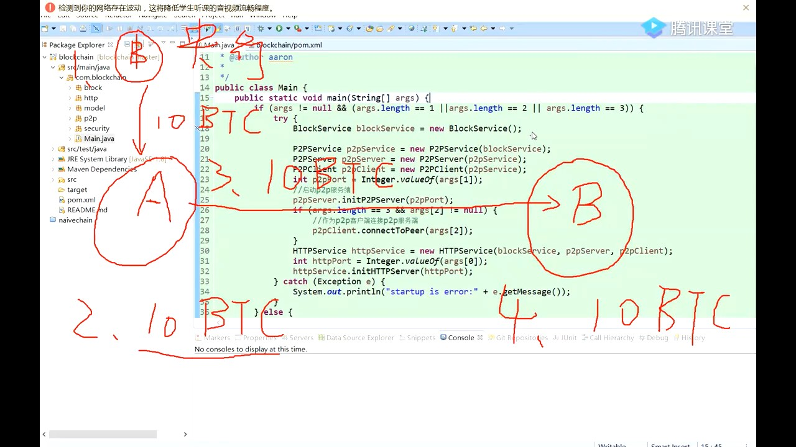
比特派
共识机制
工作量证明原理
挖矿算法
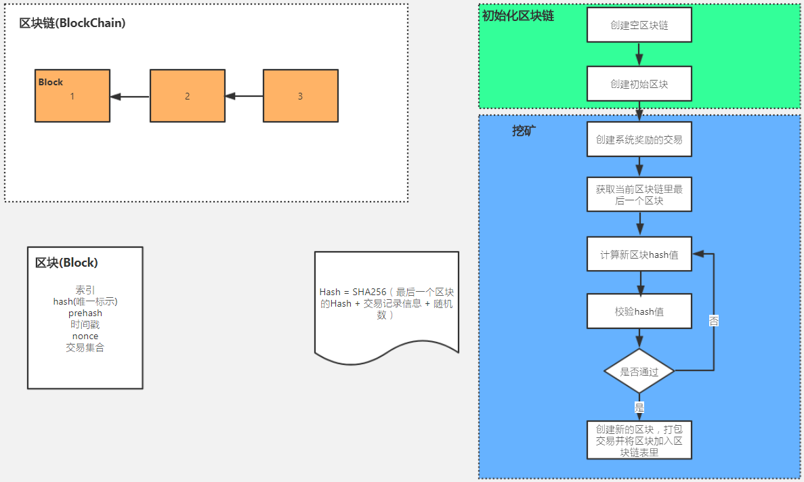
// 挖矿算法
//创建一个空的区块链
List<Block> blockchain = new ArrayList<>();
//生成创世区块
Block block = new Block(1, System.currentTimeMillis(), new ArrayList<Transaction>(), 1, "1", "1");
//加入创世区块到区块链里
blockchain.add(block);
System.out.println(JSON.toJSONString(blockchain));
//创建一个空的交易结合
List<Transaction> txs = new ArrayList<>();
Transaction tx1 = new Transaction();
Transaction tx2 = new Transaction();
Transaction tx3 = new Transaction();
txs.add(tx1);
txs.add(tx2);
txs.add(tx3);
//加入系统奖励的交易
Transaction sysTx = new Transaction();
txs.add(sysTx);
//获取当前区块链里的最后一个区块
Block latestBlock = blockchain.get(blockchain.size() - 1);
int nonce = 1;
String hash = "";
while(true){
hash = CryptoUtil.SHA256(latestBlock.getHash() + JSON.toJSONString(txs) + nonce);
if (hash.startsWith("0000")) {
System.out.println("=====计算结果正确，计算次数为：" +nonce+ ",hash:" + hash);
break;
}
nonce++;
System.out.println("计算错误，hash:" + hash);
}
Block newBlock = new Block(latestBlock.getIndex() + 1, System.currentTimeMillis(), txs, nonce, latestBlock.getHash(), hash);
blockchain.add(newBlock);
System.out.println("挖矿后的区块链：" + JSON.toJSONString(blockchain));
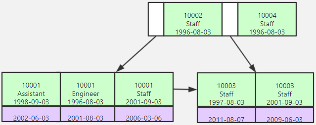
@Test
public void testEncrypt() throws Exception {
System.err.println("公钥加密——私钥解密");
String inputStr = "abc";
byte[] data = inputStr.getBytes();
byte[] encodedData = RSACoder.encryptByPublicKey(data, publicKey);
byte[] decodedData = RSACoder.decryptByPrivateKey(encodedData, privateKey);
String outputStr = new String(decodedData);
System.err.println("加密前: " + inputStr + "\n\r" + "解密后: " + outputStr);
assertEquals(inputStr, outputStr);
}
1、数字签名：公私钥加密对，私钥签名，公钥验证签名。 2、使用场景：比特币交易验证等。
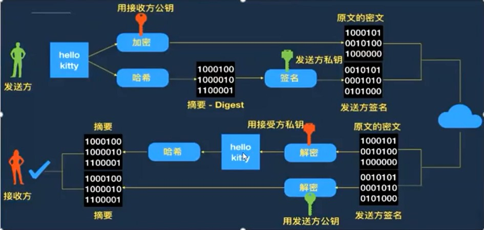
@Test
public void testSign() throws Exception {
System.err.println("私钥签名——公钥验证签名");
String inputStr = "sign";
byte[] data = inputStr.getBytes();
// 产生签名
String sign = RSACoder.sign(data, privateKey);
System.err.println("签名:\r" + sign);
// 验证签名
boolean status = RSACoder.verify(data, publicKey, sign);
System.err.println("状态:\r" + status);
assertTrue(status);
}
// 本地生成公私钥对
Map<String, Object> initKey = RSACoder.initKey();
String publicKey = RSACoder.getPublicKey(initKey);
String privateKey = RSACoder.getPrivateKey(initKey);
return new Wallet(publicKey, privateKey);
# 3 第3课：比特币的设计与实现 比特币交易UTXO - 交易输出
- 交易输入
比特币余额
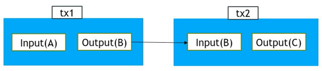 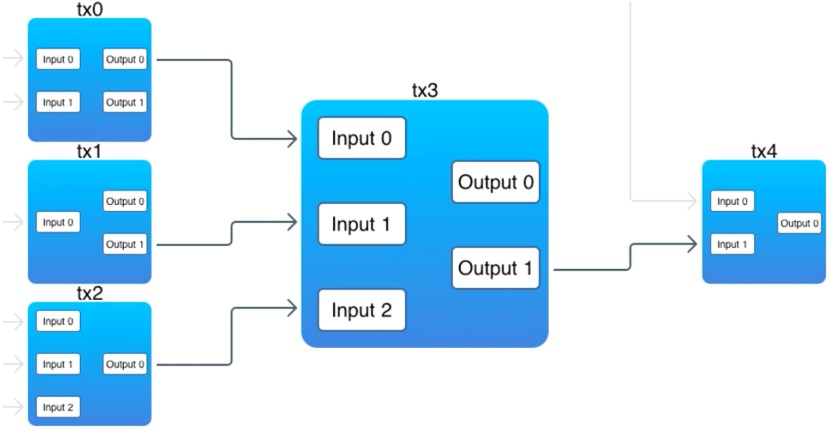
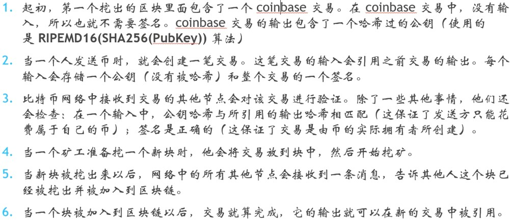
coinbase的系统交易，input为空。
//交易发起方
Wallet walletSender = Wallet.generateWallet();
//交易接收方
Wallet walletReciptent = Wallet.generateWallet();
TransactionInput txIn = new TransactionInput(tx2.getId(), 10, null, walletSender.getPublicKey());
TransactionOutput txOut = new TransactionOutput(10, walletReciptent.getHashPubKey());
Transaction tx3 = new Transaction(CryptoUtil.UUID(), txIn , txOut);
//假定tx2之前已经被打包进区块，也就是已经被记录进账本了
tx3.sign(walletSender.getPrivateKey(), tx2);
txs.add(tx3);
对发送者和接收者的公钥哈希以及整个交易签名
/**
* 用私钥生成交易签名
*
* @param privateKey
* @param prevTx
*/
public void sign(String privateKey, Transaction prevTx) {
if (coinbaseTx()) {
return;
}
if (!prevTx.getId().equals(txIn.getTxId())) {
System.err.println("交易签名失败：当前交易输入引用的前一笔交易与传入的前一笔交易不匹配");
}
Transaction txClone = cloneTx();
txClone.getTxIn().setPublicKey(prevTx.getTxOut().getPublicKeyHash());
String sign = "";
try {
sign = RSACoder.sign(txClone.hash().getBytes(), privateKey);
} catch (Exception e) {
e.printStackTrace();
}
txIn.setSignature(sign);
}
/**
* 生成用于交易签名的交易记录副本
*
* @return
*/
public Transaction cloneTx() {
TransactionInput transactionInput = new TransactionInput(txIn.getTxId(), txIn.getValue(), null, null);
TransactionOutput transactionOutput = new TransactionOutput(txOut.getValue(), txOut.getPublicKeyHash());
return new Transaction(id, transactionInput, transactionOutput);
}